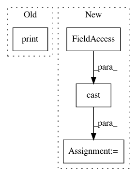

f6b5e2412d4912caa43384d97b90287b2c4e218f,niftynet/layer/loss.py,,wasserstein_generalised_dice_loss,#Any#Any#Any#,183
Before Change
pred_proba = tf.nn.softmax(tf.cast(prediction,dtype=tf.float64))
n_classes = prediction.get_shape()[1].value
n_voxels = prediction.get_shape()[0].value
print("prediction shape", n_classes,n_voxels)
ids = tf.constant(np.arange(n_voxels), dtype=tf.int64)
ids = tf.stack([ids, ground_truth], axis=1)
one_hot = tf.SparseTensor(indices=ids,
After Change
ground_truth,
weight_map=None):
// apply softmax to pred scores
ground_truth = tf.cast(ground_truth, dtype=tf.int64)
pred_proba = tf.nn.softmax(tf.cast(prediction,dtype=tf.float64))
n_classes = prediction.get_shape()[1].value
n_voxels = prediction.get_shape()[0].value
ids = tf.constant(np.arange(n_voxels), dtype=tf.int64)
In pattern: SUPERPATTERN
Frequency: 3
Non-data size: 4
Instances
Project Name: NifTK/NiftyNet
Commit Name: f6b5e2412d4912caa43384d97b90287b2c4e218f
Time: 2017-08-18
Author: wenqi.li@ucl.ac.uk
File Name: niftynet/layer/loss.py
Class Name:
Method Name: wasserstein_generalised_dice_loss
Project Name: NVIDIA/OpenSeq2Seq
Commit Name: 44ae6129731ee1d225db8a5f1bafea5fd4b9b542
Time: 2019-02-06
Author: boris.ginsburg@gmail.com
File Name: open_seq2seq/parts/transformer/common.py
Class Name: LayerNormalization
Method Name: call
Project Name: geomstats/geomstats
Commit Name: 098bbd517e4395255e6dee8e4293e76e19205011
Time: 2020-09-29
Author: nicolas.guigui@inria.fr
File Name: tests/test_hyperbolic.py
Class Name: TestHyperbolic
Method Name: test_log_and_exp_general_case_general_dim